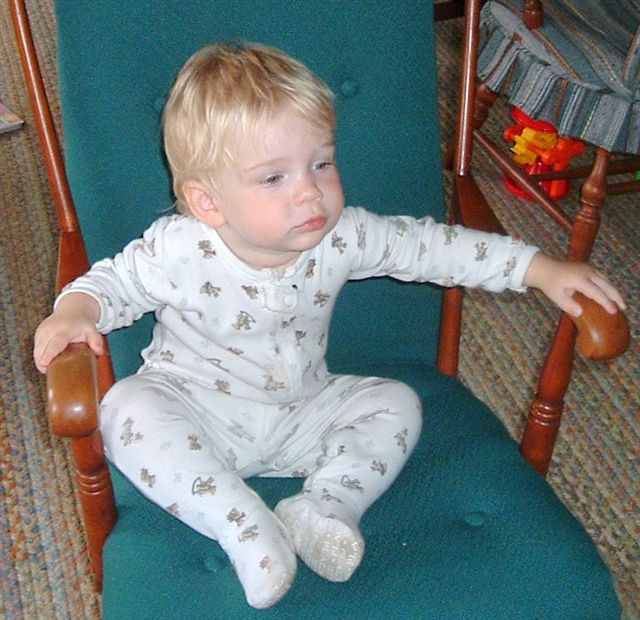

Home
Past
Quiz
Present
Future
Jake Torgerson's past!
I was born on January 13th, 2004 at 11:00. I was born at Park Nicollet Methodist Hospital, in St. Louis Park, MN
1 / 3

2 / 3
3 / 3
❮
❯
Back To Top